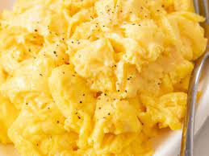

SCRAMBLED EGGS

Description:
Scrambled eggs made quickly in the best way possible!
Ingredients:
- 2 large eggs
- 1 tsp mayo or salad dressing
- 1 tsp water(Optional)
- 1 tsp margarine or butter
- 1 pinch salt and pepper for taste
Directions:
- Whisk together eggs, mayonnaise, and water in a cup or small bowl using a fork.
- Melt margarine in a skillet over low heat. Pour in eggs and constantly stir as they cook. Remove eggs to a plate when they are set but still moist. Do not overcook. Season with salt and pepper to taste once eggs are on the plate.